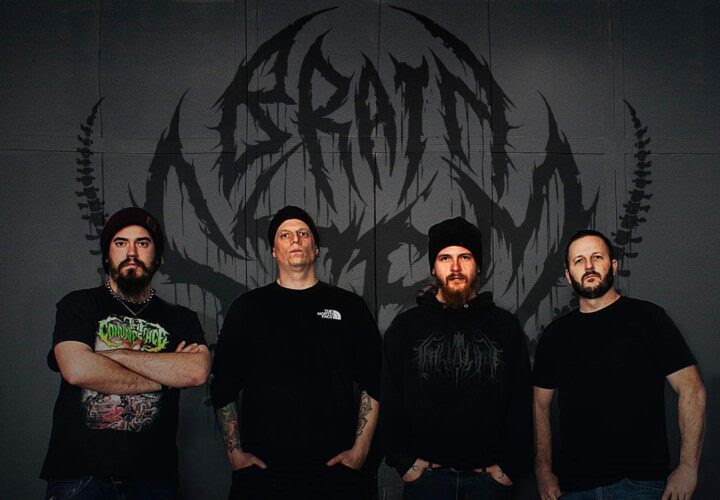

Brain Stem Unleashes Brutal New Album Nullified – Out Now via CDN Records
Canadian death metal force Brain Stem unleashed their highly anticipated full-length album Nullified on April 17th via CDN Records. Known for their dystopian storytelling and relentless intensity, the band has been crafting a uniquely crushing sound since 2016.
Nullified dives into the dark recesses of human existence, weaving a conceptual narrative of existential despair, societal collapse, and the psychological toll of trauma. From the searing critique of humanity’s exploitation in “Intergalactic Cattle” to the folklore-infused brutality of “The Blood Witch” and the suffocating weight of “Devoid of Life”, each track builds a vivid portrait of a world in decay.
Check out this video:
Band members:
- Jessy Leduc - Vocals
- Brad Fife - Bass
- Logan Magnuson - Guitars
- Alex McIntosh - Drums
Find Brain Stem below:
Check out their official music video:
Download the promo here